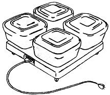

If you're tired of plastic supermarket chow and you'd like to grow at least part of your food . . . but you live in a fifth floor walk-up or on board a pirate radio ship . . . keep the faith, baby. This series is for you - and anyone else interested in the world's best tasting, most natural, least processed, least poisoned, most nutritious . . . and least expensive foods. For, surprisingly, some of the very finest (from every standpoint) eating is not only easily grown right in the house - but is positively better when so produced.
One such food is yogurt. Yogurt? Yes, yogurt . . . and I know all about the stuff they sell under that name down at the local market. I don't like it either. All I can tell you is that pure, Natural Homemade yogurt-just like home-baked breadis a quantum jump ahead of the artificially sweetened, flavored, preserved and processed variety.
Trust me - even if your first batch falls flat on its face. Mine did too . . . but the second was better and the fourth or fifth was superb! Relax, experiment a little and you'll soon be producing perfect runs of one of mankind's oldest and most beneficial foods.
And, if you're wondering what you'll do with all that yogurt, Catharyn Elwood has pretty well summed it up in her book, FEEL LIKE A MILLION! (Pocket Books, 75 cents), "Yogurt has a delightful smooth-as-velvet consistency when properly made. It can be eaten any time of day as a between-meal or before-bedtime snack, because it is not too filling. It leaves the mouth with a fresh "clean" taste. Yogurt may be eaten by itself, as a dessert combined with fruits such as berries, pineapple, peaches, grapes, apricots, honeydew melons or any sprightly-tasting fruit. It is an excellent vegetable-salad dressing when combined with parsley, tomato sauce, and grated horseradish or spiked with chopped chives and Roquefort cheese. You'll use yogurt at every meal, including breakfast, once you acquire a taste for it."
If you need more ideas, DaisyFresh (see the classified section of this issue) has compiled a booklet of something like 373 ways to use yogurt. Just remember; it tastes good, it's packed with B vitamins, protein and calcium, it aids digestion and very learned doctors believe it can - if eaten regularly - materially lengthen your life. Besides that, it's dirt cheap when you make it yourself: Twenty to thirty cents a quart.
Once you really get into making your own, you'll want a "Culturizer" or yogurt maker. This is a constant-temperature, electrically-heated base and a set of poly or glass (which I prefer) containers with tight fitting lids. Culturizers make four individual pints or quarts of yogurt at a time, take out all the hassle, are foolproof, cost from $10.00 to $15.00 and can save you $50.00 - $100.00 or more a year for years.
You can start on a smaller scale with covered Pyrex containers or plastic freezer cartons and a heating pad, hot air furnace outlet, steam radiator or other steady low-heat source.
Just like people who bake their own bread, real yogurt heads have a lot of recipes for the final product. Here's a few. . . just remember that needlessly disturbing the yogurt during incubation may cause the tender, custardlike curd to break up and "weep" or "whey-off".
GAYELORD HAUSER'S YOGURT
Add 1/2 cup of powered skim milk to one quart of fresh milk and mix with an electric mixer or by shaking in a Mason jar. Heat milk very hot but not boiling. Test by putting a drop on your wrist: It should feel hot but not burn. Stir in 3 tablespoons of the best tasting, unflavored ready-made yogurt you can find. Pour the mixture into a double boiler or into a pan set into a larger pan of water and place near a radiator or on the pilot light of a gas stove. Cover with a folded towel just like you cover raising dough when making bread. You'll have more than a quart of fortified yogurt in about 5 hours. Keep in refrigerator. Hauser recommends eating a pint of yogurt a day.
BEATRICE TRUM HUNTER'S YOGURT
Any raw, pasteurized or homogenized cow, goat, soybean or other milk may be used. Reconstituted skim milk is also good. Keep all materials and utensils scrupulously clean. Pour a quart of fresh milk into a pot and bring to a near boil. Cool to lukewarm (105 to 115 degrees F. on a cooking thermometer or warm, but not hot, on the wrist). Mix the contents of a packet or bottle of Bulgarian yogurt culture into the milk with a wooden spoon. Pour the mixture into prewarmed cups of a yogurt maker and leave undisturbed for about 2 hours. At the end of this time , remove the cover from a container and gently tilt the glass. The yogurt should be about the consistency of heavy cream. If it's still liquid, let it incubate longer and check again. When the yogurt thickens, remove and refrigerate. It will continue to thicken as it cools.
For subsequent batches, set aside a small portion of yogurt from the first batch. Within 3 to 5 days, "grow" another batch of yogurt following the above directions and using one quart of milk and t tablespoons of the "starter". Renew culture after one month.
NOTE: The original culture may take as long as five hours to "set". . . so don't get discouraged.
GOOD TIMES YOGURT
You will need:
A water thermometer (can be obtained from pet store that handles aquarium supplies)
A clean 1/2 gallon container with tight-fitting lid. (Glass is best but plastic is OK)
1/2 gallon reconstituted powered milk with 1 1/2 to 2 times as much powder as is normally used.
3 tablespoons of commercial plain yogurt for starter. Yami works well. Old Country Bulgarian (from health food stores) is expensive and doesn't always work . . . but, when it does work, is fantastic.
Finding a fairly constant source of low heat is the hardest part of making yogurt. A gas stove pilot light is usually best but a stove burner at lowest heat can sometimes be used . . . or a heating pad. Place the thermometer in a pot of water that is big enough to hold the yogurt jar. Experiment for several days until you find a combination (moving the pot closer to or farther from the heat source, turning the pilot flame up and down, covering and uncovering the pot with a towel) that maintains a nearly constant 94 degrees F. . . overnight, if possible.
The rest is easy: Mix the yogurt with the milk, cover, place in the pot, fill to the brim of the jar with water and leave for 8 to 10 hours. Then taste. If the yogurt is watery and still tastes more like milk than yogurt, let it set for a few more hours. If the culture is sour, try a lower temperature or a shorter time with the next batch. Refrigerate.
Be sure to reserve a few tablespoonfuls in a separate jar (to keep it clean) for starter of the next run. When the culture begins to deteriorate, get some more commercial starter.
SPECIAL FLASH: As I finished this piece, I received in the mail the $6.00 packet from Daisy Fresh. There's no time now to really review the Daisy Fresh material, but Joe Reimuller of that company is reallyinto yogurt. If you use yogurt at all, you've got to get the Daisy Fresh info. Joe's method of keeping a culture fresh for a year will more than repay your investment and, if you follow his instructions, there's justno way for you to make bad yogurt.
And, as long as we're dropping names and giving our free plugs, here's another: Chocolate and cocoa are very bad for you. Carob, which tastes even better than chocolate, is very, very good for you. For an absolutely delicious variation on the basic yogurt recipes, try stirring 3 to 6 tablespoons of honey into each quart of milk before you scald it. Then, when you add the culture, stir three to six tablespoons of carob flour into the milk. The resulting yogurt will be rich and chocolately and fantastic. If you have trouble obtaining carob, drop a line to Carob Products. They've got an ad somewhere in this issue.
|
 |
|
|